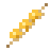

A hot barbecue dimension of charcoal, grill iron, peanut sauce and mustard, with Spiesburchten and the Mika grill palace. You get there through a grillkool frame.
Een hete barbecuedimensie van houtskool, roosterijzer, pindasaus en mosterd, met Spiesburchten en het Mika-grillpaleis. Je gaat erheen door een grillkoolframe.
The grillkool portalHet grillkoolportaal
- Grillkool (the obsidian of the guhs): let kaassaus flow over or against a block of coal. Sssss... grillkool! In the Barbecuether itself a kaasfrituursaus source next to water or kaassaus becomes grillkool too. Mine it with a diamond pickaxe.Grillkool (de obsidiaan van de guhs): laat kaassaus over of tegen een blok steenkool stromen. Sssss... grillkool! In de Barbecuether zelf wordt een bron kaasfrituursaus naast water of kaassaus ook grillkool. Hakken met een diamanten houweel.
- Build a rectangular frame of grillkool, from 4×5 up to 23×23 (corners optional), in the Guhmension.Bouw een rechthoekig frame van grillkool, van 4×5 tot 23×23 (hoeken hoeven niet), in de Guhmensie.
- Light it with an Aanmaakblokje (a guh lighter, 64 uses). Anywhere else the blokje only says "Njeg..." and works as a normal lighter. You get your first Aanmaakblokjes from the Grillguh (see below) or from the chests in the barbecueputten.Steek het aan met een Aanmaakblokje (een guh-aansteker, 64 keer). Ergens anders zegt het blokje alleen "Njeg..." en werkt het als een gewone aansteker. Je eerste Aanmaakblokjes krijg je van de Grillguh (zie hieronder) of uit de kisten in de barbecueputten.
- Just like the Nether: stand in it for 4 seconds, and 1 block in the Barbecuether is 8 in the Guhmension. Break the frame and the portal goes out.Net als de Nether: sta er 4 seconden in, en 1 blok in de Barbecuether is 8 in de Guhmensie. Breek het frame en het portaal gaat uit.
- Beds don't explode there, but you won't sleep either: "Te warm om te slapen, njeg!". Respawn anchors do work.Bedden ontploffen er niet, maar slapen lukt ook niet: "Te warm om te slapen, njeg!". Respawn anchors werken wel.
De Guhbarbecuether: getting thereDe Guhbarbecuether: hoe kom je er?
A hot, smoky dimension with a ceiling, caves and pillars. Below y 32 lies a sea of kaasfrituursaus, the lava of the guhs: it burns like lava, gives light, flows faster in the heat and water fizzles away. Scoop it up with a bucket (carefully).
Een hete, rokerige dimensie met een plafond, grotten en pilaren. Onder y 32 ligt een zee van kaasfrituursaus, de lava van de guhs: hij brandt als lava, geeft licht, stroomt sneller in de hitte en water verdampt er. Schep hem op met een emmer (voorzichtig).
| BiomeBioom | Parody ofParodie op | What it looks likeHoe het eruitziet |
|---|---|---|
| Houtskoolvlakte | Nether Wastes | Dark orange smoke, floating sparks, eternal little fires, smeulkooltjes and patches of ash.Donkeroranje rookmist, zwevende vonkjes, eeuwige vuurtjes, smeulkooltjes en asplekken. |
| Satébos | Crimson Forest | A red glow, pindasaus nylium, giant saté skewers, pindascheutjes, sticky pindasaus puddles and uienlicht.Een rode gloed, pindasaus-nylium, reuzensatéspiezen, pindascheutjes, plakkerige pindasausplasjes en uienlicht. |
| Worstenwoud | Warped Forest | Mustard-yellow mist, mosterd nylium and giant sausages (standing, bent or lying down) with a mustard zigzag.Mosterdgele mist, mosterd-nylium en reuzenbraadworsten (staand, gebogen of liggend) met een mosterdzigzag. |
| Asdal | Soul Sand Valley | Grey ash mist, ash blocks that slow you down, blue ash fires and charred guh skeletons. Home of the Asguh.Grijze asmist, asblokken die je vertragen, blauwe asvuurtjes en verkoolde guh-skeletten. Hier woont de Asguh. |
| Rookdelta | Basalt Deltas | Thick smoke with white ash, roosterijzer, grill pillars with grates in between, sauce deltas and smoking rookgaten.Dikke rookmist met witte as, roosterijzer, roosterpilaren met grillroosters ertussen, saus-delta's en rokende rookgaten. |
Food: a stick and 3 kaasknabbels make a kaasknabbelsaté; grill it (furnace, smoker or campfire) into gegrilde kaasknabbelsaté. The guhbraadworst sometimes makes you fire-proof for a moment. Drops: gloeikool 2–4 gloeikoolgruis, kaasknabbelerts 2–6 knabbels, nylium gives houtskoolsteen (Silk Touch: itself), everything else drops itself.
Eten: een stokje en 3 kaasknabbels worden een kaasknabbelsaté; gril hem (oven, rookoven of kampvuur) tot gegrilde kaasknabbelsaté. De guhbraadworst maakt je soms even vuurbestendig. Drops: gloeikool 2–4 gloeikoolgruis, kaasknabbelerts 2–6 knabbels, nylium geeft houtskoolsteen (zijdezacht: zichzelf), de rest geeft zichzelf.



De Spiesburcht: creatures of the BarbecuetherDe Spiesburcht: wezens van de Barbecuether
| BiomeBioom | MonstersMonsters | CreaturesWezens |
|---|---|---|
| Houtskoolvlakte | Nether-Mika, Vonk-Mika | Rookguh |
| Satébos | Nether-Mika | – |
| Worstenwoud | Nether-Mika | – |
| Asdal | Nether-Mika, Knekel-Mika | Asguh, Rookguh (rare)Asguh, Rookguh (zelden) |
| Rookdelta | Nether-Mika, Vonk-Mika | Rookguh |
StructuresBouwwerken
At a glanceIn het kort
- HowHoe
- Grillkool, an Aanmaakblokje or being inside.Grillkool, een Aanmaakblokje of binnen zijn.
- QuestsQuests
- Wie heeft hier gebarbecued?, NJEG mijn barbecue!, Zwart als houtskool, Het frame weer heel, Gejatte Aanmaakblokjes, VAHOEG hij brandt weer!, Chef Guh, Grillguh in de Guhdex, Het is hier heet njeg!, the five biomesde vijf biomen, Frituurvads in een emmer, Lekker warm licht, Te warm om te slapen, Barbecue-bouwer